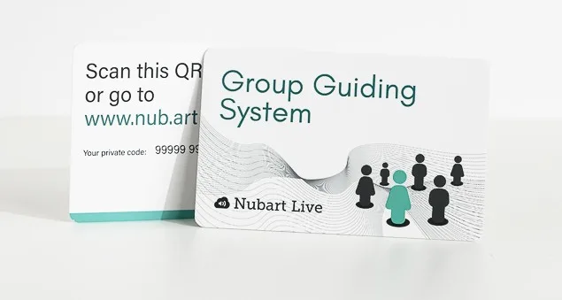
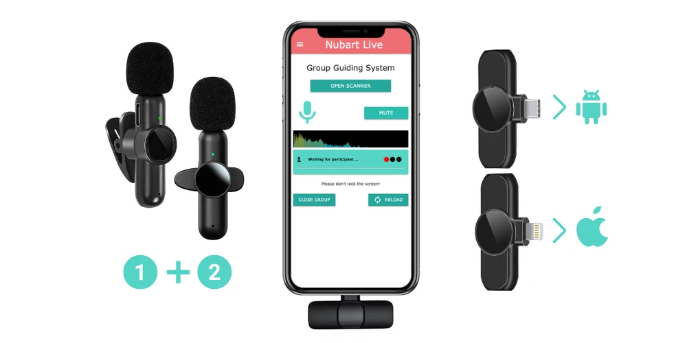

Nubart Team
How to get the most out of Nubart LIVE for your group travels
Organising a multi-day trip or study journey means keeping everyone informed while the surroundings are often anything but quiet — busy streets, crowded sites, large open spaces. Nubart LIVE streams the guide's voice directly to every participant's own smartphone, with an optional AI translation add-on for travellers who don't share the group's language.
The basic setup is simple: one guide, one smartphone, and participants' own phones. But the moment you add AI translation, one thing matters far more than anything else — the quality of the audio going into the system. This guide walks through how to prepare for a successful trip, with or without translation.

Why having a group guidance system is useful when travelling
Urban environments can be very noisy. Without the right technical tools, guides are forced to shout and strain their voices to be heard by all members of the group. In addition, the use of technical group guiding systems is mandatory in some very touristy cities or cities with narrow streets to reduce the acoustic disturbance that tour groups cause to inhabitants. Tour guide systems are also mandatory in many museums.
However, traditional tour guide equipment is expensive, heavy, and requires cleaning and maintenance. Usually, only professional tour guides are motivated enough to invest in such equipment.
But amateur guides who organise occasional tours and docents who organise field trips with their students need a lightweight solution like Nubart LIVE. It's also much more economical than traditional radio guides, and maintenance-free, since both guide and participants use their own smartphones.
The microphone: optional for voice amplification, essential for AI translation.
If you're using Nubart LIVE simply to make sure everyone can hear you, the phone's built-in microphone works. It's not the most comfortable option, though — it means keeping the phone close to your mouth for the whole tour, which gets impractical the moment you need your hands free, and it picks up more background noise too. We recommend a headset or USB microphone instead: a unidirectional one if you can, since it favours your voice over noise from other directions.
If you're using AI live translation, treat the microphone as part of the essential setup, not an optional extra. The cleaner and more isolated the guide's voice is, the better the system can transcribe and translate it — and that difference shows up directly in what your travellers hear.
If you're using AI translation, audio quality is what matters most.
The system has to transcribe what you're saying before it can translate it. Unlike a person standing next to you, it can struggle to separate your voice from wind, background noise, other conversations, or distance from the phone. Clearer audio gives it a much better basis for accurate transcription and translation.
Nubart LIVE shows a live audio quality indicator next to the guide's controls: green means the signal is good, yellow or red means something is affecting it — worth a glance while you speak, especially with translation active.
The translation add-on itself is optional, added when you book, and billed only for the minutes a guide is actually speaking with it switched on — and per active guide, not per participant, so it costs the same whether ten travellers in your group use it or just one. Participants pick their own language (35+ currently supported) when they scan their card.
Test the complete setup before your trip.
Nubart will be happy to send you a free trial kit, which you can order here. Test in conditions similar to your trip — outdoors if your tour is outdoors — with the same phone and microphone you plan to use. This confirms browser permissions are granted and an external microphone is actually being picked up. If you're using AI translation, test it switched on too, not just plain LIVE, so you find out how it handles your voice and surroundings before your group does.
Connection and the guide's smartphone.
Nubart LIVE transmits over the internet, so it needs an active connection throughout the tour. It works perfectly with Wi-Fi, but on an outdoor trip you'll inevitably rely on mobile data at some point, and coverage isn't equally good everywhere. Check mobile network coverage before your trip — services such as nPerf provide free coverage maps. If you lose signal, move to a spot with coverage and the connection will pick back up automatically once the internet is available again.
A short delay between the guide speaking and participants hearing it — typically under a second — is normal for any internet-based live audio system and isn't a sign of a problem. A longer, noticeable delay usually points to the guide's connection or phone performance, or to participants being on a weaker mobile network of their own.
The guide's phone does the most demanding work — transmitting, and processing audio for translation if it's active — so use a relatively modern smartphone with a good processor there. Participants' phones don't need to be powerful; even old ones work fine for listening.
Help the system get local names and specialised terms right.
Like any AI transcription system, Nubart LIVE can occasionally stumble on uncommon local place names or specialised vocabulary — a general limitation of AI speech recognition, not something unique to Nubart. It shows up more on a first, unprepared test than in an actual booking.
If you're moving from a trial to a real tour, upload for us your script, brochure, or any material covering the route and the terms you'll use. Our team uses this to give the system extra context ahead of time, so it recognises your specific place names and vocabulary far more reliably during the actual tour.
Multi-day trips: keep the same cards active.
Nubart cards are non-transferable but reusable, so you don't need to hand out a new card each day — each group member should just keep using the same one. Ask everyone to write their name on their card and carry it with them throughout the trip.

We also recommend leaving the group open on the guide's smartphone — this saves rescanning all the QR codes the following day.
If more than one person needs to speak to the same group.
Only one smartphone can transmit at a time. You can pass the phone between guides, connect an external microphone and pass that instead, or use a two-piece wireless lavalier microphone (typically 15–25 dollars) so two people can speak without passing anything around. If you go wireless, test the complete setup beforehand — Firefox tends to handle Bluetooth audio devices most reliably. For detailed wireless microphone setup and troubleshooting, see our instructions for Nubart LIVE.

If the guiding sessions are very long, take a charger or a portable battery with you.
Continuous phone use drains the battery of the guide faster than usual, especially since Nubart LIVE keeps the screen active. Bring a pre-charged power bank or your phone charger for longer sessions, and set screen brightness as low as comfortable to stretch battery life. Lock your screen when you're not actively using it, and remind your group to do the same once the session ends.
If you're using LIVE simply to make a guide easier to hear, an external microphone is recommended but not essential. If you're using AI live translation, treat the microphone as part of the essential setup: the cleaner and more isolated the guide's voice is, the better the AI can transcribe and translate it. Keep that in mind and your Nubart LIVE experience on the road should be smooth from the first day to the last. Have a good trip!
Not familiar with Nubart LIVE yet? Request a free trial kit — it includes 30 minutes of AI translation so you can test it with your own group before you commit:
I want to receive a Nubart LIVE trial kit.